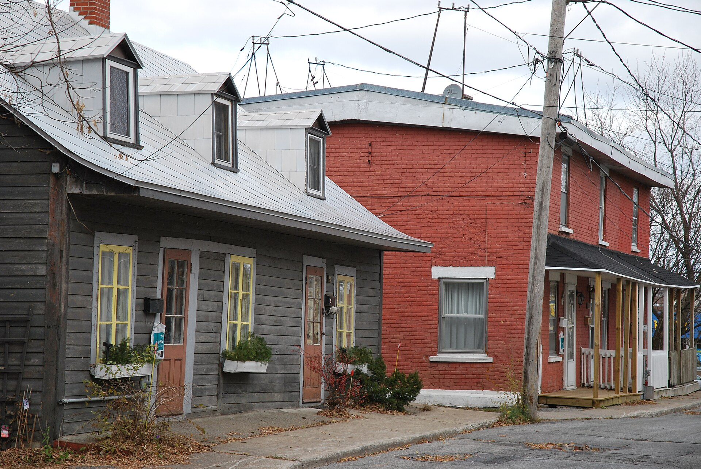

Small one-storey brick house, wider than deep, with a crown Petite maison unifamiliale d'un étage en brique à couronnement

26e Avenue, Lachine — the faubourg fabric of sector 19.I.2, where the cahier says the suburb character is felt best, "à l'architecture modeste en bois et en brique". The building in the middle of the frame is a one-storey red-brick house, wider than deep, under a flat roof behind a plain crown; at the left is a wood-clad village house with a bell-cast roof and gable dormers, and at the right a two-storey brick house with a front gallery. Photograph by Anne-Marie Dufour for « Parcours riverain - Ville de Montréal », 18 November 2010, via Wikimedia Commons, CC BY 2.0. https://commons.wikimedia.org/wiki/File:26e_Avenue_(Lachine)_(8552634536).jpg
A small single-family house of one storey in brick, wider across the front than it is deep, finished at the top with a crown. It is the plainest thing in the old town and the cahier gives it eleven words; what those words describe is a house that is the mirror image of the Montréal shoebox, which turns its narrow end to the street and grows upward. This one turns its long side to the street and does not.
It belongs to the dense grid of Vieux-Lachine, which grew along the boulevard Saint-Joseph and then reached rue Saint-Louis and rue Victoria as the arrival of firms like Dominion Bridge consolidated Lachine's industrial vocation. The cahier sets it in a list beside the wooden village houses, the attached and terraced houses under mansards and false mansards, and the brick duplexes and triplexes — four kinds of small dwelling on the same street grid, housing the workforce that the canal and the factories drew in.
| Tenure / plan | single-family |
|---|---|
| Storeys | 1 |
| Roof form | flat |
| Roof pitch | – |
| Window proportion | – |
| Principal cladding | brick |
| Roofing | – |
| Garage | – |
| Lot width | – |
| Front setback | – |
| Side setback | – |
| Front yard green | – |
What Ville de Montréal says about this type
- petites maisons unifamiliales d'un étage en brique, plus larges que profondes et avec des couronnements
- In the orthogonal grid of Vieux-Lachine: regular rectangular blocks with no back lanes, and buildings sited variably — sometimes directly on the street line, sometimes set back far enough for an exterior stair or a short path to the front door.
- La grille orthogonale du tissu urbain, avec ses îlots rectangulaires réguliers et sans ruelles, accueille un bâti qui s'installe selon des modes d'implantation variables, parfois directement sur la ligne de rue, parfois avec un recul pouvant accommoder des escaliers extérieurs ou une petite allée menant à la porte principale.
- One storey, and small.
- Wider than deep — the cahier's own words, « plus larges que profondes », and the point on which this type parts company with the Montréal shoebox it otherwise resembles.
- Crowned. The cahier names the crown as the one architectural feature of the type, which implies a flat or barely sloping roof behind it.
- The cahier states nothing about the openings of this type.
- Brick.
The whole documented content of this type is one clause of one sentence in a sector description: « petites maisons unifamiliales d'un étage en brique, plus larges que profondes et avec des couronnements ». The cahier gives no date, no roof form in words, no window type, no ornament beyond the crown, no lot dimension and no setback, so all of those are null. The phase is provisional: the type sits inside a sector whose growth the cahier ties to the consolidation of Lachine's industrial vocation, which is p3, but no year is printed for the houses themselves. The style attribution is this site's reading and not the cahier's, which attributes none. <strong>The canonical link needs a warning.</strong> The Montréal shoebox is defined by being narrow and set end-on to the street, built to be built over later; Lachine's version is explicitly the other way round — wider than deep. It is filed with the shoebox because it is the same one-storey, flat-roofed, crowned, single-family small brick house, and because the divergence is the useful thing to see.
Same word elsewhere
- –
Same form elsewhere
- Maison shoebox (Rosemont–La Petite-Patrie (borough of Montréal))
- Shoebox of the early 20th century (Villeray–Saint-Michel–Parc-Extension)
- Shoebox of the mid-20th century (Villeray–Saint-Michel–Parc-Extension)
Same period elsewhere
- Family A company houses (models A1–A8) (Arvida (borough of Jonquière, Saguenay))
- Family B company houses (models B1–B4) (Arvida (borough of Jonquière, Saguenay))
- Family C company houses (models C1–C6) (Arvida (borough of Jonquière, Saguenay))
- Family D company houses (models D1–D5) (Arvida (borough of Jonquière, Saguenay))
- Families E, G, H, J, K, L, N, Y and Z (Arvida (borough of Jonquière, Saguenay))
- Postwar bungalow (Baie-D'Urfé)
- Québec house of neoclassical inspiration (Charlesbourg (Trait-Carré))
- Mansard house (Charlesbourg (Trait-Carré))
- Boomtown building (Charlesbourg (Trait-Carré))
- Cubic house (Four Square) (Charlesbourg (Trait-Carré))
- Industrial vernacular house (Charlesbourg (Trait-Carré))
- Vernacular cottage (Charlesbourg (Trait-Carré))
- English summer villa on the lake shore (Dorval)
- Mixed-use building with a flat roof (édifice mixte à toit plat) (Gatineau)
- Side-gable duplex (duplex à mur pignon latéral) (Gatineau)
- Central-gable house (maison à pignon central) (Gatineau)
- Complex gabled-roof house (maison à toit complexe à pignon) (Gatineau)
- Mansard-roofed house with gable wall on the façade (maison à toit mansardé avec mur pignon en façade) (Gatineau)
- One-and-a-half-storey wooden matchstick house (maison allumette en bois d'un étage et demi) (Gatineau)
- Wood matchstick house of two to two and a half storeys (maison allumette en bois de deux à deux étages et demi) (Gatineau)
- Brick matchbox house, two to two and a half storeys (maison allumette en brique de deux à deux étages et demi) (Gatineau)
- Cubic house (maison cubique) (Gatineau)
- CIP executive's house (maison de cadre de la CIP) (Gatineau)
- Flat-roofed wood house (maison en bois à toit plat) (Gatineau)
- Flat-roofed brick house (maison en brique à toit plat) (Gatineau)
- L-plan house with a two-slope (gable) roof (maison avec plan en L à toit à deux versants) (Gatineau)
- English-revival stone house (Hampstead)
- Regency cottage (Île d'Orléans)
- Second Empire style and the mansard house (Île d'Orléans)
- Victorian eclecticism (Île d'Orléans)
- American vernacular cottage (Île d'Orléans)
- Arts and Crafts architecture (Île d'Orléans)
- Boomtown house (Île d'Orléans)
- Cubic house (Four Square) (Île d'Orléans)
- Modernism (Île d'Orléans)
- Québec regionalism (Île d'Orléans)
- Franco-Québécois transitional house (Lévis)
- Québécois traditional house (Lévis)
- Regency cottage (Lévis)
- Neo-Gothic (Lévis)
- Neoclassical house (Lévis)
- Agricultural vernacular building (Lévis)
- Second Empire house (Lévis)
- Victorian house (Lévis)
- American vernacular house (Lévis)
- Mixed-use or commercial building (Lévis)
- Beaux-Arts house (Lévis)
- Boomtown house (Lévis)
- Cubic house (maison cubique) (Lévis)
- Flat-roofed house (Lévis)
- Arts & Crafts house (Arts & métiers) (Lévis)
- Wartime housing dwelling (Lévis)
- Modernist building (Lévis)
- Village house of Longue-Pointe (Mercier–Hochelaga-Maisonneuve (borough of Montréal))
- Company workers' house of the Hudon mill, rue Saint-Germain (Mercier–Hochelaga-Maisonneuve (borough of Montréal))
- Bourgeois residence of the cité, Beaux-Arts (Mercier–Hochelaga-Maisonneuve (borough of Montréal))
- Shop-and-dwellings block on the commercial artery (Mercier–Hochelaga-Maisonneuve (borough of Montréal))
- Three-storey workers' plex (Mercier–Hochelaga-Maisonneuve (borough of Montréal))
- Garden City House (Town of Mount Royal)
- Faubourg House (Town of Mount Royal)
- Faubourg Apartment Block (Town of Mount Royal)
- Canadian House (Town of Mount Royal)
- New England House (Town of Mount Royal)
- New England Apartment Block (Town of Mount Royal)
- Georgian House (Town of Mount Royal)
- English Manor House (Town of Mount Royal)
- Semi-detached single-family house (Outremont (borough of Montréal))
- Semi-detached duplex (Outremont (borough of Montréal))
- Detached single-family house (Outremont (borough of Montréal))
- Opulent detached residence (Outremont (borough of Montréal))
- Apartment building (conciergerie) (Outremont (borough of Montréal))
- Modern house on the flank (Outremont (borough of Montréal))
- Faubourg house (Le Plateau-Mont-Royal (borough of Montréal))
- Detached urban house (Le Plateau-Mont-Royal (borough of Montréal))
- Duplex without front setback (Le Plateau-Mont-Royal (borough of Montréal))
- Duplex with front setback (Le Plateau-Mont-Royal (borough of Montréal))
- Duplex with exterior stair (Le Plateau-Mont-Royal (borough of Montréal))
- Triplex with interior stair (Le Plateau-Mont-Royal (borough of Montréal))
- Triplex with exterior stair (Le Plateau-Mont-Royal (borough of Montréal))
- Multiplex (Le Plateau-Mont-Royal (borough of Montréal))
- Row urban house (Le Plateau-Mont-Royal (borough of Montréal))
- Apartment block without courtyard (Le Plateau-Mont-Royal (borough of Montréal))
- Apartment block with courtyard (Le Plateau-Mont-Royal (borough of Montréal))
- Small apartment building (Le Plateau-Mont-Royal (borough of Montréal))
- Traditional Québec house of the village core (Pointe-Claire)
- Postwar bungalow (Pointe-Claire)
- Cubique — massive symmetrical block, imposing gallery, low hipped roof (Pointe-Claire)
- Village Boomtown house, two storeys, flat or low-pitch roof behind a crown (Pointe-Claire)
- Veterans' house on the Wartime Housing Limited model, c. 1947 (Pointe-Claire)
- Neo-Gothic house, villa or cottage (Québec City)
- Québécois neoclassical house (Québec City)
- Regency cottage (Québec City)
- Regency villa (Québec City)
- Mansard-roofed house (Québec City)
- Rudimentary faubourg house (Québec City)
- Boomtown house and shop-house (Québec City)
- Cubic house (Four Square) (Québec City)
- Flat-roofed faubourg house (Québec City)
- Industrial-vernacular cottage (Québec City)
- Neo-Queen Anne house (Québec City)
- Neo-Renaissance house and mixed-use block (Québec City)
- Neo-Tudor house (Québec City)
- Plex — superposed dwellings (Québec City)
- Apartment block with a central stairwell (Québec City)
- Arts and Crafts house (Québec City)
- Bungalow (Québec City)
- Camp and villégiature chalet (Québec City)
- Dutch Colonial Revival house (Québec City)
- International Style house (residential) (Québec City)
- Neo-Georgian house (Québec City)
- Prairie house (Frank Lloyd Wright inspiration) (Québec City)
- Wartime Housing house (Cape Cod) (Québec City)
- Maison shoebox (Rosemont–La Petite-Patrie (borough of Montréal))
- Triplex with exterior stair (Rosemont–La Petite-Patrie (borough of Montréal))
- Duplex with exterior stair (Rosemont–La Petite-Patrie (borough of Montréal))
- Duplex with interior stair and paired entrances (Rosemont–La Petite-Patrie (borough of Montréal))
- Detached house of the Cité-Jardin du Tricentenaire (Rosemont–La Petite-Patrie (borough of Montréal))
- Semi-detached duplex with rear garage, Art déco manner (Rosemont–La Petite-Patrie (borough of Montréal))
- Conciergerie (Rosemont–La Petite-Patrie (borough of Montréal))
- Mansard-roofed house of Second Empire influence (Saint-Lambert)
- Queen Anne style house (Saint-Lambert)
- Boomtown house with false mansard (Saint-Lambert)
- Boomtown house with crown (parapet or cornice) (Saint-Lambert)
- Cubic (Four Square) house (Saint-Lambert)
- House of Arts and Crafts influence (Saint-Lambert)
- Multi-dwelling building of plex type (Saint-Lambert)
- The "King Cottage" (Saint-Lambert)
- Two-storey clapboard village house of the îlot villageois (Sainte-Anne-de-Bellevue)
- Traditional Québec house of the village core (Sainte-Anne-de-Bellevue)
- Garden City Press workers' house (Sainte-Anne-de-Bellevue)
- Postwar bungalow (Sainte-Anne-de-Bellevue)
- English summer villa on the lake shore (Senneville)
- Arts and Crafts country estate (Senneville)
- Postwar bungalow (Senneville)
- Boomtown house (Le Sud-Ouest (Montréal))
- Duplex with interior stair (Le Sud-Ouest (Montréal))
- Three-storey duplex (Le Sud-Ouest (Montréal))
- Triplex with interior stair (Le Sud-Ouest (Montréal))
- Urban house (Le Sud-Ouest (Montréal))
- Apartment house (Le Sud-Ouest (Montréal))
- Duplex with exterior stair (Le Sud-Ouest (Montréal))
- Multiplex (Le Sud-Ouest (Montréal))
- Raised duplex (Le Sud-Ouest (Montréal))
- Triplex with exterior stair (Le Sud-Ouest (Montréal))
- Lower-town company house (Ross and Macdonald, 1918–1923) (Témiscaming)
- Upper-district company house (Somerville, 1925–1950) (Témiscaming)
- Maison cossue of rue Saint-Louis (Vieux-Terrebonne)
- Neoclassical Québécois stone house (Vieux-Terrebonne)
- Small-gabarit vernacular village house of the Bas-de-la-Côte (Vieux-Terrebonne)
- Well-to-do bourgeois house in stone and brick (maison cossue) (Trois-Rivières)
- The 1908 reconstruction block — brick, flat-roofed, built all at once (Trois-Rivières)
- Boomtown house (Trois-Rivières)
- Immeuble à logements — the plex of superposed flats (Trois-Rivières)
- Cubic house (Four-square) (Trois-Rivières)
- Arts & Crafts house (Trois-Rivières)
- Three-storey plex with exterior stair (Verdun (borough of Montréal))
- Two semi-detached duplexes, or a three-dwelling building, with deep front balconies (Verdun (borough of Montréal))
- Three-storey commercial block with dwellings above and alcove balconies (Verdun (borough of Montréal))
- National Housing Act house — 1½ storeys, brick, to prize-winning plans (Verdun (borough of Montréal))
- Maison-magasin and warehouse with dwellings above (Ville-Marie (Montréal))
- Freestanding greystone mansion (Ville-Marie (Montréal))
- Greystone terrace (Ville-Marie (Montréal))
- Workers' house with carriage gate (Ville-Marie (Montréal))
- Rural or village house (Villeray–Saint-Michel–Parc-Extension)
- Shoebox of the early 20th century (Villeray–Saint-Michel–Parc-Extension)
- Boomtown house (Villeray–Saint-Michel–Parc-Extension)
- Plex of the early 20th century (Villeray–Saint-Michel–Parc-Extension)
- Apartment building of the early 20th century — the conciergerie (Villeray–Saint-Michel–Parc-Extension)
- Shoebox of the mid-20th century (Villeray–Saint-Michel–Parc-Extension)
- Post-war house (Villeray–Saint-Michel–Parc-Extension)
- Post-war semi-detached house (Villeray–Saint-Michel–Parc-Extension)
- Plex of the mid-20th century (Villeray–Saint-Michel–Parc-Extension)
- Apartment building of the mid-20th century — the walk-up (Villeray–Saint-Michel–Parc-Extension)
- Picturesque villa and country house (Westmount)
- Greystone row house (Westmount)
- Greystone triplex with exterior stair (Westmount)
- Mansard-roofed house of Second Empire influence (Westmount)
- Queen Anne house (Westmount)
- Richardsonian Romanesque house (Westmount)
- Semi-detached brick house (Westmount)
- Eclectic prestige house of the summit (Westmount)
- Tudor Revival house (Westmount)
- Arts and Crafts semi-detached house (Westmount)
- Interwar apartment house (Westmount)
Same style elsewhere
- Brick duplex and triplex, detached or in continuous alignment (Lachine (borough of Montréal))
- Company workers' house of the Hudon mill, rue Saint-Germain (Mercier–Hochelaga-Maisonneuve (borough of Montréal))
- Shop-and-dwellings block on the commercial artery (Mercier–Hochelaga-Maisonneuve (borough of Montréal))
- Three-storey workers' plex (Mercier–Hochelaga-Maisonneuve (borough of Montréal))
- Faubourg House (Town of Mount Royal)
- Faubourg house (Le Plateau-Mont-Royal (borough of Montréal))
- Duplex without front setback (Le Plateau-Mont-Royal (borough of Montréal))
- Duplex with front setback (Le Plateau-Mont-Royal (borough of Montréal))
- Duplex with exterior stair (Le Plateau-Mont-Royal (borough of Montréal))
- Triplex with interior stair (Le Plateau-Mont-Royal (borough of Montréal))
- Triplex with exterior stair (Le Plateau-Mont-Royal (borough of Montréal))
- Multiplex (Le Plateau-Mont-Royal (borough of Montréal))
- Rudimentary faubourg house (Québec City)
- Maison shoebox (Rosemont–La Petite-Patrie (borough of Montréal))
- Triplex with exterior stair (Rosemont–La Petite-Patrie (borough of Montréal))
- Duplex with exterior stair (Rosemont–La Petite-Patrie (borough of Montréal))
- Duplex with interior stair and paired entrances (Rosemont–La Petite-Patrie (borough of Montréal))
- Conciergerie (Rosemont–La Petite-Patrie (borough of Montréal))
- Multi-dwelling building of plex type (Saint-Lambert)
- Village house (Le Sud-Ouest (Montréal))
- Duplex with interior stair (Le Sud-Ouest (Montréal))
- Triplex with interior stair (Le Sud-Ouest (Montréal))
- Duplex with exterior stair (Le Sud-Ouest (Montréal))
- Multiplex (Le Sud-Ouest (Montréal))
- Triplex with exterior stair (Le Sud-Ouest (Montréal))
- Small-gabarit vernacular village house of the Bas-de-la-Côte (Vieux-Terrebonne)
- Three-storey plex with exterior stair (Verdun (borough of Montréal))
- Workers' house with carriage gate (Ville-Marie (Montréal))
- Greystone triplex with exterior stair (Westmount)